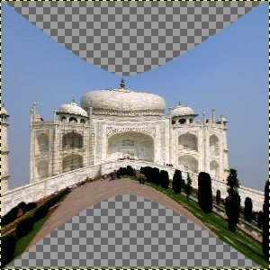

Figura 17.106. Exemplo de aplicação do filtro Dobrar em curva

Imagem original

Filtro aplicado
Este filtro permite que você crie uma curva que será usada para distorcer a camada ou seleção ativa. A distorção será aplicada gradualmente de uma borda da imagem ou seleção até a outra.
![[Nota]](images/note.png)
|
Nota |
|---|---|
|
If the image is in indexed mode, this menu entry is disabled. |
- Pré-visualização
-
Todas as suas mudanças nas configurações aparecerão na pré-visualização, mas não afetarão a imagem até que você clique em Ok.
- Pré-visualizar uma vez
-
Este botão permite que você atualize a pré-visualização toda vez que precisar da mesma.
- Automatic preview
-
Com esta opção, a pré-visualização é atualizada em tempo real. Isso precisa de bastante cálculo, mas não deve ser problema para um computador moderno (2014).
- Opções
-
- Rotacionar
-
Aqui, você pode escolher o ângulo de aplicação do filtro (0-360, no sentido anti-horário). 0 é a configuração inicial: o filtro é aplicado nas bordas de cima e de baixo da imagem. Se você colocar a rotação em 90, o filtro será aplicado nas bordas esquerda e direita da imagem.
- Uniformizado, Anti-serrilhamento
-
O processo de distorção pode criar bordas muito nítidas e com degraus (serrilhado). Essas duas opções melhoram esse aspecto.
- Trabalhar em uma cópia
-
Esta opção cria uma nova camada chamada “Curve_bend_dummy_layer_b”, que se torna a camada ativa, permitindo que você veja as alterações em relação a sua imagem original sem modificar a imagem original.
- Modificar curvas
-
Nessa grade, você tem uma linha horizontal marcada, com um nó em cada uma das pontas, que reprenta, por padrão, a borda de cima da imagem. Quando você clica nessa curva, um novo nó aparece, e você pode arrasta-lo para modificar a curva como desejar. Você pode criar vários nós na curva.
Você só pode ter duas curvas na grade, uma para a borda “Superior” e outra para a borda “Inferior” - no entanto, devido a possibilidade de Rotacionar a aplicação das curvas esses nomes não correspondem necessariamente aos lados da imagem em que as curas serão aplicadas. Você pode ativar cada uma das curvas clicando nos botões de rádio de Superior e Inferior.
If you use the Freehand Curve Type option, the curve you draw will replace the active curve.
- Curva para a borda
-
Aqui você especifíca se a curva ativa é a que se aplica a borda Superior ou Inferior, de acordo com a rotação.
![[Cuidado]](images/caution.png)
Cuidado Lembre-se que a borda da curva depende da rotação. Por exemplo, com Rotacionar = 90°, a curva Superior na verdade será aplicada a borda esquerda da imagem.
- Tipo de curva
-
With the Smooth option, you get automatically a well rounded curve when you drag a node.
The Freehand option allows you to draw a curve freely. It will replace the active curve.
- Botões
-
- Copiar
-
Copia a forma da curva ativa para a curva da outra borda.
- Espelhar
-
Cria uma cópia espelhada da curva ativa na outra curva.
- Trocar
-
Troca as curvas Superior e Inferior.
- Restaurar
-
Restaura a curva ativa, deixando-a como uma única linha horizontal com apenas dois nós.
- Abrir
-
Carrega a curva de um arquivo.
- Salvar
-
Salva a curva em um arquivo.